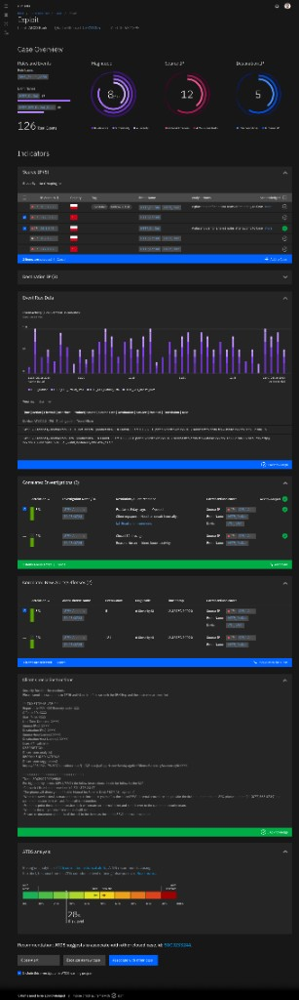
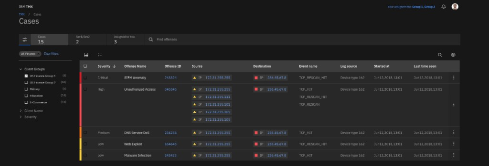

IBM Security — IBM TMX
Platforma dla Triage Analyst — ocena ryzyka, security investigations i szybka decyzja o eskalacji incydentów.
Zobacz case study →Product Designer
Łączę research, strategię produktową i dopracowany UI, aby tworzyć intuicyjne doświadczenia. Poniżej znajdziesz wybrane case studies z ostatnich projektów.
Wybrane prace
Pięć projektów pokazujących moje podejście — od discovery po finalne UI i walidację z użytkownikami.

Platforma dla Triage Analyst — ocena ryzyka, security investigations i szybka decyzja o eskalacji incydentów.
Zobacz case study →
Redesign procesu zakupowego z naciskiem na mobile-first i redukcję porzuceń koszyka.
Zobacz case study →
Spójna biblioteka komponentów i dokumentacja dla zespołu produktowego i developerskiego.
Zobacz case study →
End-to-end design — onboarding, śledzenie nawyków i personalizacja doświadczenia.
Zobacz case study →
Mapowanie customer journey i redesign wyszukiwarki lotów z hotelami.
Zobacz case study →Szczegóły
Projekt dla roli Triage Analyst — analityków oceniających przychodzące alerty security, identyfikujących podejrzane zdarzenia i decydujących o dalszym postępowaniu: zamknięciu false positive lub eskalacji do pełnej investigacji.
Analityk triage musi podejmować szybkie decyzje w oparciu o duże ilości danych — severity, źródła IP, powiązane eventy i historię podobnych przypadków. Interfejs musiał skrócić czas oceny ryzyka bez utraty kontekstu potrzebnego do audytu.
Zaprojektowałem widok Cases — tabelaryczną listę incydentów z filtrowaniem po severity, client group i przypisaniu — oraz szczegółowy widok Case z metrykami ryzyka, analizą wskaźników IP, sugestiami podobnych investigacji i akcjami eskalacji do Tier 2.

Wysoki wskaźnik porzuceń koszyka na mobile (78%) i niespójne doświadczenie między krokami checkoutu.
One-page checkout, guest checkout na pierwszym planie, sticky summary koszyka. A/B test potwierdził wzrost konwersji o 23%.


Zespół produktowy projektował od zera w każdym nowym feature, co prowadziło do niespójności UI i wolniejszego developmentu.
Tokeny designu, 45 komponentów, guidelines i dokumentacja. Skrócenie czasu projektowania nowych ekranów o ~35%.


Wejście na rynek wellness z produktem, który musi budować codzienny nawyk bez przytłaczania użytkownika.
Personalizowany onboarding, micro-interactions jako reward loop i dashboard z jasną hierarchią priorytetów dnia.


Użytkownicy gubili się w wyszukiwarce lotów + hoteli — zbyt wiele filtrów i brak porównania opcji side-by-side.
Unified search bar, smart filters z podglądem wyników na żywo i widok porównawczy pakietów podróży.


O mnie
Jestem Product Designerem z doświadczeniem w projektowaniu produktów B2B i B2C. Pracuję na styku biznesu, technologii i potrzeb użytkowników — od discovery, przez prototypowanie, po współpracę z developerami przy wdrożeniu.
Proces
Research, wywiady, analiza danych i zdefiniowanie problemu wraz z metrykami sukcesu.
Persony, user journeys, hipotezy i priorytetyzacja scope'u MVP.
Wireframe'y, prototypy high-fidelity, iteracje na podstawie feedbacku zespołu i użytkowników.
Specyfikacja, design handoff, QA wizualne i wsparcie przy wdrożeniu.
Kontakt
Szukasz Product Designera do swojego zespołu? Chętnie opowiem więcej o moich projektach i podejściu do pracy.